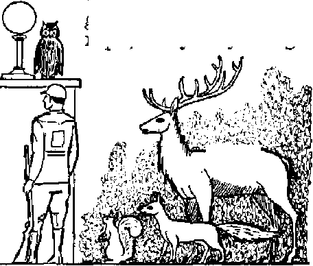
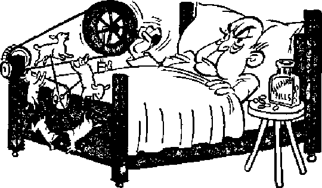

0
1 ng-o -war Bo-<, n Communist and Kuomintang drags on
Bov er girf 7 (oe or twins 7 Bv what process, this mina.de?
Would their testimony acquit or convict man ?
THE MISSION OF THIS JOURNAL
News sources that are able to keep you awake to the vital issues of our times must be unfettered by censorship and selfish interests, "Awake!” has no fetters. It recognizes facts, faces facte, is free to publish facte. It is not bound by political ambitions or obligations; it is unhampered by advertisers whose toes must not be trodden on; it is unprejudiced by traditional creeds. This journal keeps itself free that it may speak freely to you. But it does not abuse its freedom. It maintains integrity to truth.
“Awake ]” uses the regular news channels, but is not dependent on them. Its own correspondents are on all continents, in scores of nations. From the four corners of the earth their uncensored, on-the^scenes reports come to you through these columns. This journal’s viewpoint is not narrow, but is international. It is read in many nations, in many languages, by persons of all ages. Through its pages many fields of knowledge pass in review—government, commerce, religion, history, geography, science, social conditions, natural wonders—why, its coverage is as broad as the earth and as high as the heavens.
"Awake 1” pledges itself to righteous principles, to exposing hidden foes and subtle dangers, to championing freedom for all, to comforting mourners and strengthening those disheartened by the failures of a delinquent world, reflecting sure hope for the establishment of a righteous New World.
Get acquainted with "Awake!” Keep awake by reading “Awake!”
PUBLISHED SEMIMONTHLY By WATCHTOWER BIBLE and tract SOCIETY, INC.
11? Adame Street Brooklyn 1, N. Y., U. S. A.
N. H. toss, president Grant Suites, Secretary
Five cents a copy One dollar a year
R«mittance» should be sent to office in your enun-try Id compliance with regulations to guarantee safe delivery of money- RemiLtanw-i are accepted at Brooklyn from countries where no office is located, by international ntotiey order otjy. Subscription rales in different countries are here stated in local currency.
Notice of expiration (with renewal Manic) u sent at least two isaues hetore subscription euplres.
C-hanpa of address when sent to our office may be expected effectiee within one With, Send your old as well as naw address.
Offices Yearly Suhstrlptton Rate
America, U.S., 117 Adams St., Brooklyn 1, N. Y. $1 Au&trftlla, 7 Ber^fnrd Bd., StrathHeld, X-S.'iV. $s Canada. 40 Irwin Ave., Toronto 5, Ontario Si England. 34 Craien Terrace. London, W. 2 5s South Aff Ict, 023 Boston House. Cape Town 5s
Entered aa second-class matter at Brooklyn. N. I., Act of Marti] 8, 1879. Printed in U. S. A,
CONTENTS
Chinese Pawns on
"Thy Word Is Truth”
is high time to awake.— Romans 13:11
Volume XXIX Brooklyn, N.Y,, October 8, 1948 Number 19
'THREE years have passed since a I shaky but welcome peace descended upon the war-battered nations of the earth. But for China not even this breathing space has been allowed. Civil war with its distress and misery has followed international war, and the future of the nation looks black. All efforts to come to a peaceful settlement having completely failed, the mediators have packed their bags and left the outcome to be decided by the warring parties. Both parties have their eye on the big prize at stake: complete control of China and its vast millions totaling one-fifth of the population of the earth.'To gain this control they are prepared to fight on indefinitely regardless of the suffering of the masses.
The Communists declare they are fighting to end poverty and illiteracy, and for freedom of speech and assembly. They want to see the land shared out among the peasants, and, above all, they want the abolition of one-party government. The Kuomintang is the party controlling the government and represents the moneyed class of landlords and merchants. For years this class has ruled China, allowing no room for opposition. Their claim is they fight for freedom and democracy, and for the suppression of Red tyranny.
Considering the extremely low living conditions of the masses of China, it is OCTOBER 8, 1948
not difficult to see how Communism has made some progress. Poverty, illiteracy, disease, failure of crops, floods and near-survival living conditions have been the never-changing lot of the 330 million peasants. While the Kuomintang government has ruled over them, it has taken absolutely no interest in them or their plight. Cries for relief and reform have not moved the rulers, who have been too much occupied looking after their own security and that of their hoarded wealth. Yet despite their downtrodden condition there has appeared to be no general desire for armed uprising, the average person being peace-loving and inclined to accept his lot as his fate. But since Communism has appeared with its zeal, action, and abundant promises of better times and more rice, it has found a number of supporters. Communism offers a welcome change from Kuomintang rule, and many people think any change is better than no change.
On the other hand, there are large numbers who are not easily attracted by the Communists’ promises. The idea of a political party working solely in the interests of the masses does not ring genuine and true. Such love for the masses is entirely foreign to China even if it could exist elsewhere. The Kuomintang’s taking up the cry against Communism likewise fails to arouse the people to ae-
tion, because such cry sounds insincere and hypocritical. Could conditions be worse under Communist rule? Worse for which class of people? Most people are of the opinion ^that the Kuomintang fights to save its own skin. Hence the general lack of interest in the civil war by the masses.
Fighting began in 1927, and in 1928 General Chiang Kai-shek, in command of Nationalist forces, defeated the Communists and forced them to seek the shelter of the hill country. But this initial success did not dampen the Communists’ zeal to fight. Within the security of the vast hill country of western China they grew in numbers and organized for counterattacks. However, in 1931 the Japanese seized Manchuria and in 1937 invaded China proper. This put an end to the civil war, both sides now turning to fight the Japanese.
During the next eight years the civil War was almost forgotten, and China, allied to the democracies, became one of the “big four”. When V-J Day arrived millions of jubilant Chinese expected China to settle down to peaceful reconstruction along with the other big powers, and to become democratic herself. Thus a new day seemed at hand for China. But, alas! that deceptive sunrise preceded the thick storm clouds of trouble. Civil war again takes to the field where it had left off eight years ago.
A few days before Japan surrendered, Russia entered the war on the side of China and Russian troops entered Manchuria. It was to these Russian troops that the Japanese surrendered, handing over huge quantities of excellent war equipment and supplies. At that time there was not a Chinese Communist in Manchuria, but such were to the south in north China. When the time came for the Russians to vacate Manchuria, they conveniently arranged for the Chinese Communists to move in and take over all the equipment and supplies taken from the Japanese. This move also put the Chinese Communists in control of a large part of Manchuria, thus effecting a heavy blow to the Nationalists.
Manchuria has been described as the Ruhr of the Fast. It contains 70 percent of the industrial strength of China. The capital, Mukden, with two million population, the Japanese during their occupation built up into an Oriental Pittsburgh, Now Mukden is practically the only foothold left to the Nationalists in Manchuria. The city being completely surrounded, supplies have to be brought in by air. Recently it was necessary to air-lift 220 tons of hybrid corn, kaoliang and rice seed into the city for planting in time to stave off famine in the isolated and hungry city. However, Mukden is well defended and its fall seems unlikely, at any rate for a long time.
All north of the Yangtze river is now battle area with the Communists holding much of the countryside and the Nationalists holding the large towns of Peiping, Tientsin, Ts'ingtao, Chefoo and others. The Nationalist effort to drive the Communists out of rich Manchuria misfired badly, mainly due to inefficiency, graft and bungling by army leaders. Chiang, reporting on the states of the nations to the National Assembly, recently said: ‘T confess seven of the government’s best divisions were destroyed in Manchuria. We have made serious military mistakes.”
It is estimated that the Communists have 1,300,000 regular troops in the field and the Nationalists 2,000,000. Reserves are often conscripted from among the local civilians when necessary, according to the tide of battle. Likewise, supplies and food are often appropriated from the nearest farm, village or town as they are needed, regardless of who suffers. Both sides are accused of using these methods.
After seeing both sides in action, United States General Wainwright said:
“I doubt the ability of the Chinese army to hold out against the Reds. These Red troops are well equipped and well trained and they are tough.” Secretary of State Marshall spoke in the same vein before Congress. He said: “The Nationalists cannot hope to win unless the army has a solid bottom and good leaders. The fatal defect was raw farm boys are taken straight into divisions.” He added: “I tried to have them train the boys. . . . I gave them advice for a solid year, but nothing was done.” These soldiers, as well as receiving no training, also receive very little pay. Each month they get the equivalent of ten cents U. S. money. It is little wonder that they have no incentive to fight and easily desert to the Communists. Sometimes whole units have deserted, taking their equipment with them to the Communists. All observers are agreed that unless there is drastic reform and very substantial aid from outside, nothing can stop the Communists from overrunning the whole of China.
During the period of the civil war China has been compelled by the rising opposition to take steps toward democracy. The steps taken have been slow and awkward. These steps have been so arranged that the control of the nation would not pass out of the hands of the powerful Kuomintang. However, an approach has been made, even if it is slow and made from a very long way off. Bui by no stretch of imagination can it be said that China is now a full democracy.
In December, 1947, a new constitution was written and came into effect. This constitution gives guarantees of freedom of speech and assembly, and provides for free elections. A new National Assembly of 3,044 members was created, whose job includes electing China’s president. A 768-member Legislative' Yuan has been formed as lawmaking body.
The opening sessions of the new National Assembly were marred by cries for reform and the end of corruption. Delegates from distant provinces which had suffered most from Communist invasion wanted action, and demanded that the inefficient military leaders lose their heads. But despite this opposition 90 percent of the delegates voted for General Chiang Kai-shek as China’s first constitutionally elected president, thus indicating that their opposition was not directed against him personally. Chiang is generally very popular and reigns supreme and unopposed as the leader of China. His election was “natural”.
Next General Li Tsung-jen was elected vice-president. Li’s election came as a surprise because he is not a member of the Kuomintang party, and all such major government posts were considered safe for the Kuomintang. General Li said he stood for the ending of corruption and for greater efficiency in government. It so happened that his objectives ran parallel with certain non-Com-munist Kuomintang members and these supported his nomination. However, nobody with any knowledge of politics in China would raise even an eyebrow of hope at all the “reform” talk. Powerful cliques within the Kuomintang are the dictators of the government affairs, and even General Chiang is unable or unwilling to reform these. These cliques stand solidly in the way of true democracy in China. They regard the trend toward democracy as they view Communism, a threat to their power. They are determined to fight it, even inside a so-called democratic parliament.
The United States, having taken up the fight against Communism, finds herself committed to oppose it in China also. This means she must support the Kuomintang against the Communists. It is of vital strategic importance to the United States as to who controls China. Should China fall to the Communists that would alter the whole strategic position of the United States in Japan and the Pacific. The balance of power in the whole Far East would be in the hands of the Beds, and so make the United States’ position there almost untenable. Furthermore, the vast millions of China could be mobilized and used against the United States, as well as to conquer the whole of the eastern Asiatic continent. Commercially, too, China would become dependent on Russia for her goods, and the United States would lose a big market.
The policy of the United States is to help China to fight the Communists without herself becoming involved in the actual war. Hence the United States holds to the view that the present problem is largely one for the Chinese themselves to solve. So Marshall in asking Congress to provide $570,000,000 for China, said it would give that country a “breathing space” to stabilize her economy. Then she would be strong enough to fight alone and to win. Already United States aid to China has exceeded $2,000,000,000 since V-J Day; and yet there is very little to be seen for this vast sum. This huge amount has been greatly minimized due to terrific waste, bad management and graft. Now new aid has been granted to the tune of hundreds of millions.
To cure China’s economic ailments is as urgent as the need to end the war; in fact, the outcome of the war depends upon it. The fact that the country keeps going at all economically is another wonder of these momentous times in which we live. The basic problem is that the government is spending far more than it makes. Each month it spends, mostly on war, about four times what it receives in taxes, etc. To offset this deficit and thereby pay for the war the government prints a constant flood of new paper money. But this paper money does not represent real wealth, and consequently the people lose confidence in the value of the national currency. The result is inflation.
Toward the beginning of 1948 it required almost half a million Chinese dollars to equal in value one United States dollar; while on the black market it was very much higher. But with currency inflation this rate of exchange does not remain stationary; it keeps rising. This means that all the time one is holding National currency it is depreciating in value, and, if held long enough, will become worthless. The ultrarich invest their money in property or change it into foreign currency, as these remain stable in value. Many individuals transfer their wealth to United States banks, where it is considered safe. (Our next issue considers China’s present economic reforms.)
But this withdrawing of capital from circulation is a serious blow to China’s economy. In addition, it displays an absolute lack of national spirit on'the part of such individuals, many of whom are high officials in the government and the army. It is this spirit of look-after-your-self that is rendering the government efforts noneffective. Yet it was expected that Uncle Sam would come to the rescue with some more aid, which he did.
To the worker, on which the country depends so much, this financial decay is his principal concern, more important thait the issue of Communism and the war. The worker has to live from day to day, and to do so he has to adjust himself to the constant devaluing of his money and rising prices. Each month a cost-of-living index is issued by the local authorities, and his wages are based on this. Even the lowest-paid worker receives millions each month, which is considered sufficient to meet his needs at the prices prevailing on pay day. But prices will keep rising almost daily. An egg may cost him CNC. 7,000 [7,000 dollars Chinese National Currency] on pay day, but before the next pay day arrives it will cost him CNC. 12,000.
Inflation puzzles the peasant farmer even more. Mostly illiterate, they have to deal with astronomical figures requiring a quick brain to handle. The country people do not have the various ways the city people have of getting around inflation. They cannot hold on to their produce, but must sell. But they do not know how much to ask for their produce, because they do not know how much they will require for the purchase of their own needs. Even on his way home from market his money will be devaluating and he cannot get his own supplies out of what he has sold. Sometimes he feels he has been cheated, and he feels aggravated over the whole business and wants a change. Hence he very often welcomes the Communists when they arrive.
Graft has become an almost accepted thing in China. Many people live by graft. Wages are so low compared with prices that graft becomes a necessity. Furthermore, many Chinese enjoy the privilege of two, three and even four wives, and these have to be supported with their children, often at the higher Western standard.
Large numbers of civil servants expect bribes for their co-operation, with the public. In civil life bribes will work wonders. Oftentimes officials purposely create difficulties which immediately vanish at the appearance of some cash. An honest businessman who owes taxes to the government can declare and pay the correct sum only at his peril. The tax collector insists on his graft. He will settle for 50 percent for himself, 25 percent for the government. But if the businessman refuses, then he will be charged with owing twice the proper sum, and he may not find the judge any more honest.
In the army graft takes many forms, the simplest being padding of pay and ration rolls. Soldiers receiving poor pay expect board food and travel free. If when traveling on a streetcar the soldier is asked to pay his fare, he may feel OCTOBER 8, 1948
his honor as a soldier has not been respected and that he has “lost his face”, a serious thing to a Chinaman. He will then gather other soldiers together and start a riot, wrecking two or three streetcars and beating up the conductors. Then he feels satisfied that he has regained his “lost face”. Gate-crashing into cinemas seems to be a soldier’s privilege, too. Often 60 percent of the audience are soldiers who have gotten in that way without paying.
Such misconduct and graft is directly due to inadequate wages, and until wages are lifted and inflation curbed it can be expected to go on on a big scale, with its consequent demoralizing effect upon the people.
Not very much is known of conditions under Communist control. The powerful radio operated by the Reds in poverty-stricken Shensi is constantly poking criticism at the inflation and its problems in the government-held areas. But there are indications that the Reds have the same problems, but perhaps not on such a high scale. The difficulty of fixing wages, due to fluctuating prices, is also a Communist headache. The Communist way out is to furnish the worker with consumer goods rather than the money. At least this is their plan for solving the problem, but it must depend on a sufficient supply of the necessary commodities being made available.
A report appearing in the North China Daily News, May 23, 1948, told of two Americans arriving in Shanghai- after 14 months in Communist China. They said morale in this Communist area is high, and there is a general belief that the Nationalists will be defeated within the next two years. Other reports speak of many millions destitute and starving. Many people have fled from the battle areas and crowded into the towns to create more problems for the local authorities. Thousands of beggars are on the streets of Shanghai and the other towns. On the streets they eat and sleep and exist, a testimony to the havoc of civil war. But such people affected by the war, and there are hundreds of millions of them, do not in their distress turn Communist, because, being uneducated, they do not understand Communism. Neither do they understand their own government. All they know is that it is bad, and they conclude that the Communists must be the same.
Religious groups greatly . fear the spread of Communism in China. Many foreign religious organizations have sent a flood of missionaries into China, and having gotten established they have soon become some of the biggest property owners. Hence the share-the-property Communists have little sympathy for the missionaries who were too slow in evacuating.
Reports come of imprisonment, torture and death for priests and missionaries at the hands of the Communists. Priests are regarded as Kuomintang spies, and, according to a story from Peiping, 27 Catholic priests and their converts were “death marched” in front of a retreating Red column, all dying of either torture, starvation or exhaustion. One monastery was alleged to have killed a peasant’s goat forty years ago. It was argued that this goat would by now have multiplied into a million goats, and so they demanded compensation to that number. When this was not forthcoming they burned down the monastery. Frequently “people’s trials” take place. Priests are ordered to beat their fellow priest, and if refusing they are beaten themselves or put at the mercy of the crowd.
While some of these stories about persecution of religionists are, no doubt, true, many are evidently^ greatly enlarged for the purpose of inciting sympathy for the Catholic Church in her campaign against Communism. Some religion is, allowed to operate under the
Communists, but only provided it does not interfere with the aims and purposes of the Reds.
China has many physicians who claim they have the right medicine for her complaint. Religion says China needs Christ; meaning, of course, that China needs more of their particular brand of religion. ButjOhina has not taken so well to the“Christian religion”. To most Chinese, priests are the same as the commercial men and the politicians. The Chinese feel that the priest should put Christendom in order first before giving so much attention to China. Good, strong logic.
The United States “dollar cure” is being received without enthusiasm. There is not enough medicine in the bottle to remove all the aches and pains. It is very doubtful, too., whether much of the “cure” will reach the patient and bring relief. No doubt the nursing politicians, commercial men and army leaders will have a good mouthful first and feel very much better, but the people get only the empty bottle.
Kuomintang or Communist victory will likewise fq.il to solve the basic problem of China. These two sides, being willing to ruin the country in order to get control, can hardly be expected to work unselfishly for its prosperity.
Like other nations, China decays toward disaster, and there is not an honest man with the power or ability to do anything about it. But the One who has promised to intervene in human affairs for the blessing of men of good-will can and will do something. His solution will not enrich' the grafters at the expense of the poor. At the battle of Armageddon, to which all nations, including China, are fast approaching, Almighty God will annihilate the warmongers and corrupt governments and greedy religious missionaries, and thus clear the way for the peaceful rule of His Theocracy.-Awake! correspondent in China.
perfectly
THINK of all the endeavors, activities and accomplishments of man, or make a list of all the inventions and productions of science and industry, yet none will equal or even approach in awe-inspiring wander the formation, development and birth of a little baby. Its first cry is an announcement to all the world that the most marvelous series of events, timed with each other, have produced nothing short of a superb miracle. Earth’s billions of people are living testimony to the fact that this wonderful and miraculous feat has been successfully duplicated many times'over. Nevertheless, there are comparatively few that know even the simplest things that take place during the interval of time from conception to birth.
The normal baby girl at birth is equipped with two almond-shaped ovaries that are stocked with many thousand—one scientist estimates over 400,000—egg cells, of which fewer than 400 are ever developed into mature eggs. After passing through the stages of puberty from girlhood to womanhood these egg cells begin to ripen and mature at the rate of one every four weeks unless sickness or pregnancy temporarily interrupts the cycle, and until the menopause is reached in later life.
About the 13th or 14th day after the beginning of the menstrual period one of these eggs is discharged from the ovary and enters a three- to five-inch duct extending from the ovary to the uterus, and which is known as the ovi-
duct or Fallopian tube. The tiny egg complete with its yolk and outer covering of gelatin measures no more than 0.14 millimeter, or 1/200 of an inch in diameter. Enter-■| ing the oviduct it remains until expelled with the next menstrual flow or until it is fertilized with a male sperm cell.
The life-giving spermatozoa or sperm cells are produced by the male glands or testes, which correspond to the ovaries of the female. The glands have a thousand fine hair-like canals each about three feet long that feed into larger tubes that are coiled around each gland and which measure over 20 feet in length. The sperm cells that take approximately two weeks to develop are stored in another tube called the vas deferens. Fully mature the sperm cell resembles a tadpole with a nucleus as a head and a long wiggling filament body that enables it to swim. Microscopic in size it is extremely small in comparison with the egg, and some have estimated that at the time of mating as many as 500,000,000 are launched in the female uterus.
Once freed the sperm cells propel themselves along at the, rate of eight minutes to the inch for a distance of six inches or more before they reach the upper portion of the Fallopian tube where the egg is resting. Many are exhausted before reaching this goal, many are obstructed by extraneous tissue matter, many are killed by body secretions, and at least half of those that live enter the empty Fallopian tube containing no egg. J5ut one spermatozoon is required to enter the egg and strike the spark of life (and some can live as long as three days).
Conception properly refers to the moment the nucleus of the sperm cell unites with the yolk of the egg, for at that moment growth begins and the phenomenon of cell-division is started that will continue until there are a thousand billion cells making up an adult. As this spectacle begins to unfold the fertilized egg starts its journey down the Fallopian tube, where after several days, by attaching itself to the wall of the uterus, it finds a new home in an expanding cavity. Meantime the organs of the prospective mother have poured into the blood stream a yellowish hormone, progesterone, which sets in motion other processes. The rhythmic contraction of the uterus is stopped, its walls begin to thicken and its blood vessels are enlarged in order that the new life may be properly nourished.
From the very beginning of conception parents plague themselves with baffling questions as to whether the baby will be a boy or girl, whether it will have blue eyes or red hair, whether it will look like its mother or have a disposition like its father. For generations these questions of heredity have haunted humanity, and, until recent years, have been “explained” by either the superstition of star-gazing religious astrologers, high priests and magicians or by the mythology of backwoods folklore. Many an old wives’ tale has attempted to give the answer: a pain in the left side means it is a girl, an enlargement of the right breast is proof it is a boy. Medical literature of olden times also contains* many pseudoscientific theories as to what causes a baby to develop into a boy or girl.
Modern scientific findings in the field of genetics expose all these notions as being entirely without foundation. It is now factually established that the mother has nothing to do with the sex of the baby, but rather this factor is controlled entirely by certain chromosomes found in the nucleus of the father 's sperm cells. Chromosomes, of which there are 48 in humans,' are extremely small threads made up of genes. Whereas certain genes from the male determine the sex of the baby, other genes found in both father and mother pass along all hereditary traits and are responsible for more than a thousand of the baby’s personal characteristics. Hence the color of its eyes and hair, the height of the grown child, the size of its body, the width of the shoulders and hips, the shape of its nose, ears and mouth, the color of the skin, and the development of its internal organs and glandular structure are all controlled and determined by the genes. Hereditary diseases and the many physical defects are thus passed on from one generation to another.
A very interesting sidelight on the influence of the genes comes from a study of twins and other multiple births. Last year there were over 45,000 pairs of twins born in the United States, bringing the twin population to about 4,000,000. Statistics show that on'average once in every 87 births twins arrive; for every 87 sets of twins, or once in 7,569 births, triplets arrive; for every 87 sets of triplets, or once in 658,503 births, quadruplets are born. The famous Canadian Dionnes quintuplets were the first authentic case in medical history to live. Argentina also boasts of a living set of quintuplets. Mary Austin of Civil War days seems to hold the record for multiple births, having borne 13 sets of twins and 6 sets of triplets, or 44 children, over a period of thirty-three years.
Twins are divided into two types: identical or similar, and fraternal or dissimilar twins. Two-thirds of all twins are fraternal and occur when each ovary lets down a mature egg simultaneously into the Fallopian tubes where they are fertilized by separate sperms. The resulting twins may be of the same or opposite sex, and in heredity they are no more alike than other brothers and sisters. This is because a different pattern of genes is found in each. Identical twins, on the other hand, occur when a single egg, after fertilization by a single sperm, divides into two separate embryos. If the division is not complete “Siamese” twins result, a possibility once in every 50,000 births. The astonishing similarity not only in looks but in mental character and disposition of one-egg twins is explained by the fact that they both have identical sets of genes from the original chromosomes carried by the single sperm nucleus, Of necessity identical twins are of the same sex.
There are other irregularities in the development of some babies, such as birthmarks, formation of the stomach upsidedown, mislocation of the heart, bladder, etc., and the more common defect known as harelip or cleft palate in which the lip and bony structure in the roof of the mouth fail to join properly during the formative embryo stage. Whether these discrepancies are due entirely to abnormal chromosomes is not too well understood. But one thing is certain: these defects are not due to any negligence on the part of the parents and surely the child should not be ridiculed. Only an ignorant person will believe such nonsense as expressed in The Anatomy of Melancholy, published in 1621, where it tells how “one Thomas Kickell went reeling and staggering all the days of his life because his mother, beirig great with child, saw a drunken man reeling in the street”.
Developments in the Drama of Life
Once the life energies of the mother and father have been joined mighty forces are set to work to produce another human creature. The fertilized egg, hav-mg attached itself to the wall of the uterus with a tiny root, a bubble begins to form. It is made up of three layers: the outer, called the ectoderm, which will develop into hair, skin, nails and nervous system; the middle layer, which produces the bones, muscles and blood vessels; and the inner part, or endoderm, which will grow into the respiratory system, the digestive tract and associated organs.
At this stage the embryo is but a few days old and measures about one-fifth millimeter in diameter. By the time it grows to one and a half millimeters in length its rudimentary spinal cord, brain and heart are distinguishable. The third week of growth finds the heartbeat definitely established and rudiments of the eyes and inner ears can be detected. By the end of the first month lateral buds that some day will be arms and legs are distinguishable. Growth and development so far must seem comparatively slow, but the ground work has been completed and already the embryo has grown from a single cell to a throbbing entity that measures a centimeter in length, or about three-eighths of an inch.
Now the drama begins to move more rapidly. The features of the face begin to appear, markings for elbows, knees, and finger and toe digits become visible, and by the end of the second month the embryo is more than an inch long. During the third month it takes on more likeness of a human and is now spoken of as the fetus instead of the embryo. The external genitalia that distinguish the sex become visible to the unaided eye by the 11th or 12th week. By the end of the fourth and the beginning of the fifth month the baby starts to exercise its muscles, and the first time the mother is conscious of this movement is commonly spoken of as the “quickening” and which has led people to the erroneous belief that this marks the beginning of life.
When the baby begins to move around in its light-sealed room it indicates that a new development is taking place. To start with, the young life was either suspended horizontally or was resting in a sitting position, but before birth can take place baby must be in a head-downward position so that it can easily slip through the narrow passage to the outside world without doing injury to its loose arms and legs. This means a lot of shifting, and the mother, of course, is conscious of it, for by the end of the sixth month, when the change in position is complete, the baby is from ten to fourteen inches long. During the next month more developments take place. The covering of membranous tissue on the eyes is removed and other details are rounded out, so that if born prematurely at this stage it would have a fair chance to live with proper hospitalization. Yet, God did not purpose to turn out incubator babies, or a job with only the minimum of work completed on it, and so He added another two months to enable the babe to grow strong enough to reasonably resist the harsh conditions it has to face in the bustling world.
It would be impossible for puny man, with all his training and education in engineering, to construct such a perfect and suitable chamber for the baby's growth and development as is the mother’s womb. From the beginning the embryo is attached to the wall of the uterus by means of the umbilical cord, through which the blood of the mother circulates to feed the growing baby with oxygen and nutrition. Not until the baby is delivered does it take in oxygen through its own lungs. Then there is the placenta, the intricate sac in which the bundle of life is wrapped and protected. Far more elaborate is this than the wrapping surrounding any plant seed or the covering of any other mammal’s young. Not until the baby is completely delivered is this "aftermath” cast off. And the mother’s very framework, her bowl-shaped pelvic bones, forms a natural and most efficient cradle in which to carry her precious burden until time for delivery.
From start to finish, from the formation of egg and sperm cells to the bringing forth of a new offspring, the reprq-duction and development of a baby is truly a superb achievement nothing short of a miracle, the details of which the human mind cannot understand, comprehend or explain. “As thou knowest not what is the way of the spirit, nor how the bones do grow in the womb of her that is with child: even so thou knowest not the works of God who maketh all.” (Ecclesiastes’'11: 5) To the great, all-powerful Creator, in whom resides infinite knowledge, wisdom and understanding, must be given all honor, praise and glory for the birth of a baby. “Lo, children are a heritage of Jehovah; and the fruit of the womb is his reward.”—Psalm 127: 3, Am, Stan. Ver.
----«i~
“c$4wakel” on a Desert Isle \
Several months ago Dorothy and Dick, well-known radio team, asked their listen-ing public: “If you were stranded on a desert island, which three publications would you like to have come to you regularly For some time they read answers written in, and most listeners named such popular magazines as Saturday Evening Post, Dife} etc. But on the morning of September 2 Dorothy and Dick rdad on their program over New York’s powerful WOR station this letter from a lady: “If I was stranded on a desert island the three publications I would like to have come to me regularly are Awake! the I?New York Times and Reader’s Digest* The: reason I would like to get Awake! is because it is a journal of courage, fact and hope, and presents daily happenings in their true light, I would like to be kept awake on all these happenings in the world and I could do it through the Awake I”
WHAT is this? Peace bombs? Atomic bombs, incendiary bombs, and other types are well known to this civilized, twentieth-century, war-torn world; but a peace bomb is something little heard of. During the present time- Venezuela is trying to make peace with a tribe of Indians that live in the western part of Venezuela, in the state of Zulia. These peace bombs are dropped from airplanes near the home of these uncivilized Mo-tilon Indians. The bombs contain hatchets, machetes, blankets, and other things for the use of these aborigines. Some of the bombs also contained a picture of a Catholic priest giving things to an Indian. This was to establish friendly relations for the Catholic mission at Tukuku.
For centuries the Motilones have had a bad reputation, and it is probably for this reason that no expeditions have penetrated the eastern slopes of the mountains called Sierra de Perija. All references and books about these Indians agree to their ferocity, and one geographer goes so far as to put a notice on his map that the Motilones are “the worst Indians that exist”. The word Motilon signifies “cut-hair”, which is the name given to them because they cut their hair short.
The Motilones of Venezuela are divided into two groups, the .Chakes and the Mapes. The Chakes live in the mountains, where the climate is cooler, and they use blankets and caps of cotton to cover themselves. -The Mapes live in the hotter climate along the Catatumba, Oro and Santa Ana rivers. Due to the hot climate, they use little or no clothing. The Mapes are enemies of the Chakes.
The Mapes are known as “Motilones bravos”, which in English means “Savage Motilones”, and are the most fierce of all tribes and live far back in the woods in an uncivilized and primitive world. When explorers come into their territory searching for valuable trees, oil, rubber and other natural products they attack with ferocity and kill the intruders if possible.
The social standard or life of the Motilones is very low and primitive; therefore they do not care or bother about this modern and mechanical world in which we are now living. Style and habits of dress cause no concern among them and they are ignorant of what is going, on in the rest of the world. Their clothing is very simple and may consist of only a cloth of cotton wrapped around their waist and hips. Many of the Mapes wear no clothing at all. They like to adorn their bodies with beads made from hard, well-polished wood, teeth from wild boar or jaguars, and pieces of engraved bone. Both men and women paint themselves with annatto (bixa orellana), especially on important occasions.
The Motilones are of a reddish copper color and not very dark. They have slender, well-built bodies and are about five feet in height. They are a clean people and like to bathe by sitting in the river and throwing water on themselves with a gourd or calabash. Some of the men have more than one wife, depending -on their riches, and if a man has five wives he is considered well off financially. The women work in the fields or plantations to grow cotton, corn, yuaa, sugar cane, pineapples, and bananas. They also weave

the cloth from the cotton, make mats, and other utensils for cooking and cultivating the soil. The men do not work very hard, and their main occupation is to hunt and fish and make their weapons. The children gather wood and firebrands to make the fire, and carry water. A cacique rules over the people and makes all laws and rules to govern his people.
Their houses are provisional constructions made from palm - leaves. On one occasion some petroleum workers of the Colon Development Company saw a group of Mapes, men, women, and children completely nude who fled into the forest when they saw the white men. The workers found near by a large house 100 feet long, 33 feet wide, and 40 feet high. They used no mud or dirt to make the walls, but bamboo poles were buried in the ground and came to a point at the top. The bamboo poles were covered with palm leaves. Inside, the house was divided into four floors or shelves one above the other on which were deposited their cooking utensils, weapons, instruments for cultivating, mats made from palm leaves, and blankets made from cotton. Also were found objects for adorning their bodies.
Their food consists of corn, yams, sweet potatoes, beans, and meat from the animals that they hunt. They eat deer, wild birds, and fish that they catch from the risers on which they live. Also they like to hunt alligators on the Catatumbo river, obtaining the eggs, which are considered a favorite dish. Their drink is called "chicha”, made from fermented corn, and great quantities are consumed during fiestas and funerals.
When someone dies they have a great fiesta while the dead body is smoked for three days, during which time the people have ceremonies to their gods or tabus. During the ceremony they dance while drinking much chicha. After the body is smoked they bury it in his house. After two years, during a full moon they dig up the bones, smoking them again for three days. Another ceremony is held with much dancing and drinking until they all fall into a trance completely drunk. Then a nearest relative ties the bones in a bundle, carries them on his back for a seven- or eight-hour journey high, high up into the mountains, where he deposits them in holes made in the rocks.
The weapons of the Motilones consist of bows and arrows, distinguished from those of the other Indians by their length and material of Which they are made. The bows are made of palm wood about six and a half feet long, and the center section is elliptic. The arrows are made of the same hard wood, but some use points made of iron. The length of the arrows is about five feet. They are made in two sections, the first being about 28 inches long, which is fastened together with the second section of 35 inches with thread or string wrapped around many times. The point of the arrow or rod is of a triangular shape seven or eight inches long with barbs projecting backward from the point of the arrow. This makes the arrow very difficult to pull out of whatever it is shot into. When pulled out of flesh it leaves a large and ugly wound. Some of the arrows that have been found are shorter in length, with points of iron fastened to hard wood.
The temper of the Motilones is not considered dangerous unless they are molested by the people living near by. The oil explorers treat the Indians very badly, burning their homes and destroying their crops when they have an opportunity. On one occasion the oil explorers horribly burnt and massacred one of the Motilones. With the spirit of vengeance they attack the white adventurers that come into their rich, fertile lands. Over four centuries ago a Spaniard by the name of Alonso Perez de Tolosa came into their territory along the Catatumbo river and tried to conquer them but failed. This, no doubt, explains the hatred the Motilones have for the white people until this very day.
Many expeditions have been tried by explorers during the past 25 years; but they have not had much success, nor have they been able to penetrate very far into the land without disastrous results. A great number have been killed by these warriors who fight to maintain their freedom and independence. A recent attack took place, on May 30, 1948, when a Capuchin monk, of the mission at Tukuku in the Motilon country, and a guide were riding to a near-by village to get a herd of cattle. A couple of Indians, with their faces and bodies smeared with black and red, ambushed them and began to shoot arrows. One killed the mule of the guide, another struck the saddle. The third arrow pierced the abdomen of the monk, Primitive, de Nogarejas.
So the peace bombs have had little effect on the Motilones, and, instead of becoming peaceful, they are more fierce. They regard the “gift bombardments" as a trick and their attacks have increased. These Indians have great hatred fop these intruders whether thfey are oil explorers or priests. They consider them as one group, who try to steal from them their rich land. Time will tell if the white men will win and take from these wild and savage fighters their wilderness home. Perhaps the “peace bombs" are not so peaceful in their final purpose after all. —Awake! correspondent in Venezuela.
^Definition of a Boy
C “After a male baby has grown out of long clothes and triangles and has acquired pants, freckles, and so much dirt that relatives do not care to kiss it between meals, it becomes a boy. A boy is nature’s answer to that false belief that there is no such thing as perpetual motion. A boy can swim like a fish; run like a deer, climb like a squirrel, balk like a mule, bellow like a bull, eat like a pig, or act like a jackass, according to climatic conditions. He is a piece of skin stretched over an appetite, A noise covered with smudges. He is called a tornado because he comes at the most unexpected times, hits most unexpected places, and leaves everything a wreck behind him. He is a growing animal of superlative promise, to be fed, watered, and kept warm; a joy forever, a periodic nuisance, the problem of our times, the hope of a nation. . . .
“Were it not for boys, the newspapers would go unread and a thousand picture shows would go bankrupt. Boys are useful in running errands. A boy can easily do the family errands with the aid of five or six adults. The zest with which a boy does an errand is equaled only by the speed of a turtle on a July day. The boy is a natural spectator. He watches parades, fires, ball games, automobiles, boats, and airplanes with equal fervor, but will not watch the clock. The man who invents a clock that will stand on its head and sing a song when it strikes will win the undying gratitude of millions of families whose' boys are forever coming to dinner about suppertime,
“Boys faithfully imitate their dads in spite of all efforts to teach them good manners; a boy, if not washed too often, and if kept in a cool, quiet place after each accident, will survive broken bones, hornets, swimming holes, fights, and nine helpings of pie.”
The above from the Spokane (Wash.) Spokesmen-Review, credited to Fabiin M, Smith, was reprihted in the Faulty Circle. Almost everyone will agree with it, and no argument is precipitated, until the following is added: “Girls are made of sugar arid spice and everything nice.”
TEIEY would probably utter a list of grievances longer than the combined complaints of all the delegates to the U.N. conference. Furthermore, they could document their claims to the .utter disgrace of their human overlords. More conclusively, perhaps, than anywhere else, man has demonstrated his unfitness to rule in his cruel treatment of the inoffensive creatures over whom G-od once gave him dominion. “A righteous man regardeth the life of his beast: but the tender mercies of the wicked are cruel.” —Proverbs 12:10.
This article is not sponsored by the Society for the Prevention of Cruelty to Animals, usually referred to as SPCA. The truth is that the SPCA, with its more than 537 branches in the United States, does not approve any forthright attack on animal cruelty. Supinely desiring the approval of men rather than effective campaigning, its essential weakness is disclosed by a social authority: 'Tn the United States, the animal protective societies have rigidly dissociated themselves from the anti-vivisection movement, leaving this field to an independent group of anti-vivisection societies.”
Encyclopedia of the Social Sciences
Since the cruelties to defenseless animals performed in the vivisection laboratories surpass any horrors that the “unscientific mind” could possibly devise, the American SPCA might just, as well close up shop. It usually happens that these expensively endowed and highly advertised organizations fail in direct accomplishment because they are more interested in favorable public mention than in accomplishing their commission.
One authority levels a more serious charge against several of the richest organizations, namely, that the American Humane Association, headed by Robert F. Sellar, president, the SPCA, under the direction of Sidney H. Coleman; executive vice-president, the Anti-Cruelty Society, managed by Dr. W. A. Young, have actually joined forces with the promoters of vivisection. Commenting editorially upon this collaboration of “humanitarians” with vivisectionists Orphans of the Storm, published by a real humanitarian group, remarks:
To accept the contributions of kind-hearted animal-lovers for the purpose of stamping out cruelty to animals and then to use their official positions to lend an air of respectability to the most outrageous of all forms of animal torture seems to hit a new low in double-crossing.
Whenever there is organized wickedness, the element of profit is never lacking. (1 Timothy 6:10) The universities, determined to insure a supply of animals for experimentation, continue to protect the dog thieves. The pharmaceutical laboratories throw the weight of their resources in with the American Medical Association to prevent all legislation against cruelties. In March Northwestern University provided a lawyer to defend Frank Myers, arrested driver of a truck carrying fifty sick and congested dogs bound for laboratory use, and the judge freed Myers and gave Northwestern the dogs!
It is claimed that a large number of the animals tortured in the animal inquisition chambers are stolen pets. With pets the medicos stand little chance of being bitten, because the gentleness of pets is well established. Also useful to the ring are the crooked pet shop operators who sell sick and stolen animals. Doing their part, too, are the periodic rabies scares through health officials, “although actual cases of deaths from rabies are almost unknown/’ says Orphans of the Storm.
Whenever wickedness has been done on such a large scale it is always interesting to look for religious participation. Many of the great universities have been founded by religious sects. Undoubtedly the drug manufacturers have considered it expedient to seek in the publicity channels of religious institutions means of recommending or glamorizing their commercial traffic. While it is evidently impossible to trace all the ramifications between the “shot” makers and their “respectable fronts”, it is noteworthy to observe the position of one well-known religious organization. Lined up against-the animals and on the side of entrenched power is none other than an actor always found opposed to righteousness. “The progress of the animal welfare movement ... It has made slower progress in the Latin countries, where it has never succeeded in enlisting the support of the Catholic Church " {Encyclopedia of the Social Sciences, under heading “Animal Protection”, Vol. II, p. 62)
Man’s Responsibility Toward Animals
Having remarked the course of greedy money-lovers it seems in order to review man’s responsibility toward the animal world, as recorded by the Bible. The general rule of responsibility is this: “And to whomsoever much is given, of him
Stan. Ver.) To man, as representeu oy his progenitors Adam and Eve, and while they were still perfect, God gave much, saying: “Have dominion over the fish of the sea, the birds of the air, the domestic animals, and all the living things that crawl on the earth!”—Genesis 1: 2S, An Amer. Trans.
That all creatures’ lives, either man or beast, are highly regarded by Jehovah is indicated by His “everlasting covenant”. (Genesis 9: 3-16) Thus man may harness animals for his service, kill them for food and clothing, but cruel treatment and wanton destruction are forbidden.
Besides the unspeakable laboratory torture of creatures, other practices of men contravene the “everlasting covenant”. The notorious killing of “gam$” animals and birds, in the lust for “sport”, causes many deplorable excesses. Certainly no harm exists in shooting game that is needed for food, but killing merely to demonstrate marksmanship, stalking, decoying, or hunting ability, and to brag about the kills and tickle human vanity, puts too low an estimate on creature life. To cause suffering and death merely for the profitless pleasure of a bloodthirsty Nimrod is certainly ungodly.
Instances of this form of abuse are the extermination hunting of the buffalo in the last century in America which attracted ruthless hunters world-wide; the ter of 6,000,000 muskrats for their pelts in the marshes of Louisiana; the general killing of ducks, geese, quail, deer, in which no effort is made to use the meat; the hooking of the great tarpon and sailfish which, after a few photographs of the conceited angler, are thrown away to rot; the massacre of 28 boatloads of tame penguins, which were clubbed to death in a few days by Dutch explorers on the Straits of Magellan in the seventeenth century; the destruction of millions of horses and cat-tie in unrighteous wars—all these are just some of the many instances of man’s reprehensibility before the Lord.
sport-annihilation of the wisent, which formerly grazed the plains of Europe; the yearly slaugh-
Collier’s for August 7,1948, gave some figures for which man must also shoulder responsibility. It said: “Of the some 110 species of mammals known to have become extinct since the beginning of the Christian era, at least 70 have died out within the past 100 years. Furthermore, 600 other species of mammals are now vanishing and will disappear unless measures are taken to preserve them,”
Cruelty in the “Sport of Kings”
Another abuse particularly outstanding is the ill-treatment of animals for theater acts, and in the so-called “sport of kings”. The latter, or horse-racing, has gained for itself much foul publicity.
Here again crops up the motive of profit. During the war when rationing prevented the use of earnings for increased purchasing, the major tracks enjoyed increasing patronage. Crambling was an exciting way to spend excess profits. New York, with its Jamaica, Aqueduct and Belmont Park, led the nation’s horse-racing revival, while Los Angeles, with its Santa Anita and Hollywood Park, also made track-profit history. New York’s five tracks (including Saratoga and Empire City) brought in bets of $352,624,464 from 4,584,163 last year. During the racing season the average betting was $2,000,000 per day by the 25,000 people present. The desire to win in these lucrative events pushes many jockeys and owners to inhuman abuses, which are frequently winked at by racing officials.
Narcotics are often used;to stimulate the racers, but worse practices are revealed by an article dealing particularly with Maryland racing, published by the American Weekly, March 7,1948, entitled “Horrors Mar the Sport of Kings”. The shocking disclosure was made that a slow-starting horse was regularly shot in tiiQ, rump by a blast of rock salt. Only after the pain-dazed horse dashed into a fence shortly after the start and had to be destroyed was the practice revealed. Particles of the salt were found embedded under the skin. One racing commissioner who courageously prosecuted the owner was actually removed by Maryland's “blue-blood sportsmen”.
Another instance brought to light was the “denerving” or “cutting” of horses that had hoof sores, to correct a limp. Upon the horse .of another owner was discovered the print of several links of chain. Investigation disclosed the trainer had his own sinister method of exacting the last burst of speed from his mount. In the privacy of the stall, he would mercilessly beat the thoroughbred with a length of chain with such regularity that the animal began to associate his torment with the rattle of the chain. Then in the race the jockey would secrete a length of chain on his person, or have it handed to him with the last pat of the owner, and when the need was greatest for speed, he rattled the chain in the horse’s ear. In a desperate effort to escape the horror of further beating, the racer bursts ahead driven by fright.
But after their racing days are over the miseries of the animals do not cease. In an article entitled “Outcasts of the Sport of Kings” (American Weekly, April 18, 1948) Dan Parker charges: “For every star of the turf that retires in comfort, there are ten thoroughbreds abandoned with crudest neglect.” One fine old son of an Arabian, a champion in his own right, named Abdullah, after losing his youth was sold to a fish peddler for harnessing. With tremendous fire for his aging body, Abdullah kicked the fish eart to splinters and raced for freedom. During warm weather he picked at tough grasses around Gravesend Bay, but later that year he was found dead of exposure and starvation. “Jack Dempsey,” another winner, was shipped to Cuba, and in his declining years was found covered with matted hair and tormented by mosqui-toes on the city dump where he had been thrown to die.
Man’s debt to God, which must be paid at Armageddon, when all accounts of the wicked must be settled, is continually increasing because of his abuse of flesh-and-blood creatures. “For every beast of the forest is mine, and the cattle upon a thousand hills.” “For Jehovah hath a day of vengeance, a year of recompense.” (Psalm 50:10; Isaiah 34:8, Am. Stan, Ver,) It is indeed a great evidence of endurance on the part of Jehovah that He permits the continued existence of the foul fiends that corrupt the earth. Their defilements must soon come to a close as the grave swallows up their memories. Can a decent man conceive the degradation they have wrought!
Have you ever seen a white stallion upon a green meadow! His prancing strides throw flying mane like a wave of plume on the forested background.
Have you marveled at the organization and symmetry of snow geese in V-formation, tinged with russet and gold by the declining sun! Can you picture the splendor of the bird of paradise darting through the rainbow colors of the tropical jungle! Have you ever taken to sea and sighted a giant marlin breaking the waves with majestic leap before sounding to depths that would crush man as it would an eggshell 1 Have your eyes appraised the exquisite tapestry upon a tiger's lithe length, or has your brush tried to match the rosy red plumage of the flamingoes, etched more vividly by the grassy marshland! Can you measure the speed of a buck white deer carrying his head adornment with pardonable pride and perfect poise through the shadowy glade!
If you have not seen these things, have you known that the energetic beaver with his family builds a dam in one night that would take the engineers months? Do you not marvel at the cunning of the female killdeer that feigns a lame wing to distract you from her young, or the chipmunk that discovers how to bring a peanut tied on a limb, pulling it up hand over hand! Have you known that some dogs can distinguish 400 words spoken by anybody! Have you ever heard of the goose that was shocked by the lovemaking of another pair? and of the male bittern that fell in love with its keeper, forced its mate off the nest, and tried to make the man sit on the eggs? Are such creatures intelligent? Are they not sources of unmeasurable delights to humans with hearts?
If you have not seen or heard about these phenomena of animal life, has your heart been moved by the ecstatic notes of the mocker’s spring calls! or have your senses been soothed by the turtledove’s evening cooing! Has the plaintive beauty of the nightingale’s song stirred you to the depths!
If you have observed the expression of any of these marvelous attributes of the animal kingdom, can you understand man’s gross abuse of such creatures? The “despised” Indian understood better than “civilized” white man when he said: “A needle fell from the pine in the forest. The bear smelled it as it fell. The deer heard it. The eagle saw it fall.” It has thus been left to the “superior” white race to wreak the most abominable crimes upon finely endowed creatures. Does any just man think Jehovah will forget them in His Day of Reckoning?
SLEEPYHEADS CZ.
SLEEP and work seem strange bedfellows, but bedfellows they are nonetheless. As we sleep the heart pumps, blood circulates, the body recuperates, muscles keep lungs working like bellows, stomach and intestines do digestive chores, we dream, perspire profusely, turn and toss, snore and talk, and sometimes even walk. And now experiments are afoot to teach us as we sleep. Why, insomnia begins to seem easier. Doctors have discovered much about sleep, practically everything except what it is and what causes it. It is still one of the great mysteries puzzling scientists.
Theories as to why we sleep are numerous. The ancient Greeks said it occurred -when the blood left the brain, and awaking came with the return of the blood. Similarly, today many believe we become drowsy after a big meal because the blood is diverted from the brain to the digestive organs. Surely the sense of hearing must be credited with some influence in the matter, as monotonous sound or soft lullabies induce sleep. Some scientists claim sleep is caused by an accumulation of certain poisons in the blood stream, and that when a person sleeps the poisons are flushed from the body.
The man considered to be the foremost authority on sleep is Dr. Nathaniel Kleit-man, of the University of Chicago’s sleep laboratory. Over the past twenty-five years he has studiedthou-sands of sub-jects, light and heavy sleepers and insomniacs. He also has a theory. He thinks the question is not what puts us
0
to sleep but what keeps us awake. We stay awake as long as the brain is stimulated by nerve impulses from muscles, organs, or the outside world. When these stimulating impulses vanish consciousness is lost and sleep sets in. Fatigue reduces the number of these impulses and hence to that extent is a factor, but that it is not decisive is shown by two facts: Drowsiness is overcome by muscular activity, which increases fatigue; a person who feels no fatigue can usually sleep if he excludes light and noise and other external factors and lies quietly. According to Dr, Kleitman’s theory, awaking takes place as increasing numbers of nerve impulses come to the brain from rested muscles and internal organs.
What happens when you sleep f First the pulse rate, heart rate, respiration and other physical processes slow down. Blood pressure is low, the brain becomes anemie. The five senses leave you, vision being the first to go. Some claim hearing is the last sense to desert you, but others say the sense of touch lingers longest. The small blood vessels in the body relax and dilate, we give off more heat, and our temperature falls. During the night we “grow” from one-half inch to a full inch, due to the expansion of the cushioning cartilage between the vertebrae, which are slowly compressed during the upright positions of waking hours. Most bodily secretions are reduced, such as from the tear duets and salivary glands, but tha sweat glands work at an accelerated pace. An article in Hygeia, April, 1945, claimed that during one hour of sleep we sweat as much as during one hour of strenuous exercise. As sleep gives way to wakefulness these bodily conditions shift into reverse, returning to their state prior to sleep. The five senses return in reverse order of their departure, that is, the last to leave you upon sleep is the first to return when you awake.
The quality of our sleep is a factor deter-mining how hard we will work as a sleepyhead. If our slumbers are deep we do not dream or talk or walk, we turn less, relaxation is more complete, though recuperation is governed more by duration of sleep than by depth. When deepest sleep occurs is another point of controversy, one saying during the first hour, another claiming that sleep lightens after the first hour and a half but deepens again around the fourth or fifth hour. Dr. Kleitman believes that periods of heavy sleep alternate with periods of light sleep all through the night
Light sleep may not spread to the posture and muscle tone centers. This is why some can nap while sitting up or even while standing, and it is also the condition that obtains when the sleep-walker takes a stroll. Talk occurs in light sleep, and it is in our lighter slumbers that we dream. Food increases dreaming, but it does not determine the features of the dream. Most doctors and scientists believe dreams indicate the relationship between our inner consciousness and the outside world, and spring from ideas, fears or conflicts repressed during the day. Or it may be just a matter of wishes coming true in a dream world. It is claimed that the average person has two or three dreams a week that he can remember. Nightmares are dreams involving agonizing horror and panic-stricken dread. Frequently recurring nightmares may be a symptom of brain tumor or serious nervous disorder; but the average personas chances of being harmed by nightmares are exceedingly small, and unless they recur often one has little to worry about.
Since many are prone to attach undue significance to dreams, it will be of interest in passing to briefly note the theory of the leader of the Freudian psychoanalyst sect, Sigmund Freud teaches that the dream has a meaning far deeper than its actual content. The deeper meaning always takes the form of a fulfillment of a wish springing from the sex impulse, a wish the person refuses to consider while awake but which sneaks in during sleep when the will power is in abeyance^ and even then it gets in only via disguised dreams. If these thoughts of the deeper meaning which have been banished or exiled to the subconscious were to force their way into the sleeper's dream undisguised they would so disturb him that he would awake; so, as a guardian of sleep the dream distorts and disguises. Dreams are said to be the safety valve of the subconscious. The psychiatrist says he is the one who can rip off
the dream disguise and interpret its symbolisms and expose the deeper meaning. To read some of these dream-interpretation formulas reminds one of crystal-ball gazing and tea-leaf hocus-pocus. Some psychologists hold to a theory that sounds more plausible, namely, that “dreams are attempts to solve in sleep conflicts which are disturbing the waking life”. According to this, sleepyheads work while they dream.
But maybe you do not dream. Maybe you do not even sleep. Insomnia has you in its clutches. Insomniacs take their cares to bed with them, and rise in the morning more fatigued than if they had spent the night doing manual labor. The cure? Sleeping pills, those habit-forming barbiturates? Apparently many think so, as the United States alone produces 600,000. pounds annually, enough to put every man, woman and child in the United States asleep each night for two weeks, or 5,000,000 persons asleep every hight for one year. But not only do they fail to remedy the causes of insomnia; they also result in 500 deaths yearly, through overdoses taken either by accident or with suicidal intent. Shun those dangerous sleeping pills as insomnia cures. Instead, rid yourself of your cares before getting into bed, relax. As Dr. Kleitman says, “We need nothing to put us to sleep, only something to keep us awake.” Disrobing ourselves of our cares along with our clothes may not be easy, but there are ways.
Slow your living pace as" bedtime nears, coast into a standstill. Halt all strenuous physical and mental activity at least a half hour before retiring. Free the mind of problems or emotional strain. Listen to some soothing music, read some light material. Jumpy nerves are calmed by a warm bath. Light exercise an hour or so before retiring may help—and include the exercise of raising the bedroom window, as fresh air is essential to restful sleep. Hunger contractions in the stomach disturb sleep, so a raid on the icebox is in order. But limit yourself to a light snack, as heavy foods cause major digestive movements that interfere with slumber. Sipping warm milk or some other drink helps many sleep-seekers. The nightly cosmetic routine women enact serves to relax them before retiring. Important is a regular sleep cycle, going to bed at about the same time each evening. Some advisers tell insomniacs to woo sleep by feigning drowsiness, stretching, yawning prodigiously. Counting sheep and other mental gymnastics are frowned upon. Be indifferent to how many sheep hurdle a fence, and to other things, including sleep. Do not make your sleep problem an obsession; anxiety over sleeplessness can cause a wakeful night. So languidly dwaddld around for a half hour before retiring, then to bed in a quiet and dark room, and sleep I
But for how long? Eight hours? Perhaps; but maybe more, maybe less. Requirements vary with individuals. Some may need nine or ten hours, others only six or seven. Mental workers need more sleep than manual laborers. Dr. Kleitman says if yqu wake up just before the alarm rings you have slept your quota; if not, get to bed earlier. Edison and Napoleon were supposed to thrive on four hours nightly, with frequent naps tossed in during the day. Insomniacs may drool at the thought of four hours sleep a night, but doctors question the vigorous protestations of many that they “didn’t sleep a wink last night”. As one article put it, “Loss of sleep is unmistakable. A few nights of it will turn a man into a wreck. The pink-cheeked individual who complains he doesn’t get a wink snatches more than a few some time or other,” This does not mean the victim deliberately misrepresents. An article in Look (October 14, 1947) explained: “It is possible to think you have slept 'not a wink’ when you actually have had sleep, but have awakened during the night for mere periods of seconds.” Certainly an hour of wakefulness during the night seems like four or five!
Some fables about sleep have already been contradicted, such as the set requirement of eight hours’ sleep nightly, and the harmfulness of eating before retiring. Similar to the latter one is the claim now advanced that while coffee receives much abuse from poor sleepers, experiments show it makes little difference. Many persons can drink it and sleep soundly, although others are stimulated by it and their sleep suffers. Contrary to popular belief, daytime naps do not rob one of sleep at night. Another sleep fallacy is that tossing and turning ruins sound sleep. The average sleeper moves thirty seconds out of every hour, changes position from twenty to forty-five times during the night, and has about a dozen basic sleep positions. Such movements allow all parts,of the body to relax. An intoxicated person, sleeping off a drunk, does not change position, and as a consequence awakes stiff and sore. So if you “sleep like a log”, when you awake you will likely be “stiff as a board”.
Also false is the notion that you must pay yourself back hour for hour when you lose sleep. How long humans can go without sleep is unknown, but Dr. Kleit-man went without it for eight consecutive days and nights. Experiments are common where individuals are kept awake for five consecutive days and nights. Some of the weird results were extreme irritability, loss of memory, apathy, hallucinations, bursts of irrelevant laughter, nervous breakdowns, delusions of grandeur, combativeness - to the point where restraint was necessary, and some extreme cases resembled acute schizophrenia while thte disturbance lasted. But the point here is, that all these effects disappeared after a deep sleep of ten or twelve hours. That was sufficient to erase the ill effects of losing five nights’ sleep.
An extreme case of losing sleep is that of Alfred Herpin, a recluse who lived in New Jersey, and who claimed that he never slept, but only rested during his lifetime, which lasted ninety-four years. Doctors were openly skeptical. In sharp contrast is the case of a woman who lapsed into sleeping sickness and slumbered for twelve years. She suddenly awoke at the age of fifty-two, and the long sleep seemed to have restored her to youthfulness. Also interesting is the “frozen sleep” doctors have used on patients, and which refreshes the ailing ones. After taking a sedative the patient is packed in ice in a porcelain bed. Electric fans help to lower the temperature as the patient sinks into unconsciousness. Body temperature drops from the normal 98.6 to 90, and sometimes as low as 85. The digestive organs cease functioning, no food is required, breathing slows, pulse weakens till it cannot be felt, and a mild anesthetic prevents the usual pain of freezing. The patient is like this for five days, in a dreamless sleep, much like the hibernation of bears and other winter long-sleepers. A warm drink and gradually rising temperature awake the patient and restore normal body functions.
Most intriguing are the prospects of becoming brilliant while we sleep. Max Sherover, inventor of sleep teaching, uses a device he calls the cerebrograph, or mind writer. It consists of a record player, a special clock that turns the player on after the user is asleep, and a sponge-rubber pillow containing a whispering speaker. Concerning experiments in sleep teaching Science Illustrated, July, 1948, says:
Several months ago, as a student at the University of North Carolina lay fast asleep in bed, a voice whispered a language lesson in his ear* This student was not having a bad dream; he was participating in one of the current scientific studies of sleep, When the student awoke in the morning, he was asked to memorize a short list of words; he did so with unusual ease and speed* It was this list which had been read to him softly as he slept— through a speaker hidden inside his pillow and attached to a record player* Another student, who had slept in the same room that night, but who had not been read the list, was also asked to memorize it; he took much longer.
These two students were among a group of forty with whom University of North Carolina psychologist Charles R. Elliot worked for two years to see if they could be taught in their sleep* Convinced that sleep teaching has important potentialities, Dr* Elliot will launch a new and even more exhaustive survey of it this fall at Pennsylvania State College. He thinks that what people now sweat over to learn may be taught - almost painlessly in years to eome; foreign language vocabularies, Morse code, multiplication tables, and chemical formulas may one day be planted gently in the minds of sleepers* . . .
Dr. Elliot believes the memorization which takes place in the morning after a subject has heard a record in his sleep is similar to the recollection of temporarily forgotten facts* He explains that learning occurs easily during sleep because the districting influenee of light and the other senses is absent* But the sense of hearing can be made to carry on during sleep, allowing a spoken lesson to make
an impression on the brain*
Alas, the time may come when sleepyheads will work so hard during their slumbers that they will yearn for insomnia to get some rest!
Liberties at Low Ebb
C Arthur Garfield Hays, counsel for the American Civil Liberties Union, recently declared that the suppression of free speech for the Communists, the high incidence rate of racial and religious discrimination, the “smear campaigns” of the so-called Un-American Activities Committee, the growth of anti-Communist hysteria, censorship of minority opinion on the college campus, in the auditorium, on the screen and radio and in the press, are all evidences proving that American civil liberties are not as safe as the Constitution says they should be.
Jehovah *s witnesses in Qreece
Athens—An order issued by the Ministry of Finance has made it illegal to import into Greece any religious publication unless the name of the denomination or sect is stamped on each piece of literature. Violators will be liable to six months’ imprisonment and a fine of 100,000 drachmas, the ministry announcement said. Jehovah’s witnesses, the order said, must stamp on their publications one of the following; “Heresy of the Thousandists,” “Heresy of Jehovah’s witnesses,” or “Heresy of Students of the Scriptures”. Exempt from the law are all volumes which contain the teachings of the Orthodox Church, and all hymn books and praj'er books used during the rehgious services of every other denomination. Seven members of Jehovah’s witnesses have been arrested here for trial by court-martial* They were charged with exhorting young men from fighting against the guerrillas.—Religious News Service dispatches. August 3(h
^r<\ ... W»&
JOHN 17
The House of Mystery
WHILE writing to the Ephesians and the Colossians at about the same time the apostle Paul said: “By revela-i tion he made known unto me the mystery; . . . which in other ages was not made known unto the sons of men, as it is now revealed unto his holy apostles and prophets by the spirit; that the Gentiles should be fellowheirs, and of the same body, and partakers of his promise in Christ by the gospel?5 “The mystery which hath been hid from ages and from generations, but now is made manifest to his saints: to whom God would make known what is the riches of the glory of this mystery among the Gentiles; which is Christ in you, the hope of glory?’— Ephesians 3:3-6 and Colossians 1:26,27.
To His beloved Son, Jesus Christ, Jehovah God first revealed the mystery. It is His purpose to have a capital organization over the universe, that is, the kingdom of heaven which should be occupied by a royal house. .This royal house implicated in the mystery was to be composed of 144,000 and One, that is to say, Christ Jesus-as the Chief One, and the 144,000 as fellow members under him of the reigning house. The membership of this house or household was therefore long a mystery to all creatures of the universe.
Faithful men of God from Abel onward understood that God would have a mighty organization and government that would bring blessings to obedient men in God’s due time, but they did not have a knowledge and understanding as to who would compose this organization and when it would come and how it would operate. It was the apostle under inspiration who said that this mystery was at last revealed to God’s saints. The word saints means holy ones, those Christians who are pure of heart and who have been justified by faith in Christ and who are therefore righteous in the sight of God. No one can be pure and righteous in His sight without faith in Him and in Christ Jesus and without obedience to God’s commandments. Thus it is seen that persons with faith in God and in His Word and in Christ as the Savior of mankind are greatly favored, and these are the ones of genuine, undisguised faith.
When Jehovah God revealed this mystery for the first time to His beloved Son in heaven, He also informed Him what would be the requirement of the One that would occupy the exalted position of Head of that great government. Among the requirements announced were full obedience to God’s will and faithfulness even to death. In full understanding of these requirements Jesus said: “Therefore doth my Father love me, because t lay down my life, that I might take it again. No man taketh it from me, but I lay it down of myself. I have power to lay it down, and I have power to take it again. This commandment have I received of my Father.”—John 10:17,18.
Those words of Jesus prove there was a covenant or agreement between Jehovah the Father and His Son, that the Son should lay down His own life on earth in obedience to His Father’s will
and that the Father would raise the Son out of death in His due time. That covenant Jesus further made prominent by His words which He uttered to His Father after He had finished His public ministry, namely: “I have glorified thee on the earth: I have finished the work which thou gavest me to do. And. now, 0 Father, glorify thou me with thine own self with the glory which I had with thee before the world was.”—John 17: 4, 5.
It is true that the death of the man Christ Jesus provided the ransom sacrifice for obedient men; but at this point of our discussion we must consider that which is of far more importance than any human creatures. That which leads in importance is the Kingdom, and it takes this foremost place because it forever vindicates the universal sovereignty and holy name of Jehovah God. Those who compose the members of the royal household of that kingdom share all together with Christ Jesus in vindicating Jehovah God. It is because they give first importance to the Kingdom in their lives.
Jesus often discussed the mystery of the royal household of God. To heighten the mystery of it and yet also to clarify it He spoke in parables. The parables He uttered are prophecies, and such prophecies could not be understood until God’s appointed time to understand them. Then only those could understand who devoted themselves to God and to His kingdom. In answer to the question of His disciples as to why He taught the general public in parables Jesus answered: “Because it is given unto you to know the mysteries of the kingdom of heaven, but to them it is not given.. For whosoever hath, to him shall be given, and he shall have more abundance: but whosoever hath not, from him shall be taken away even that he hath. Therefore speak I to them in parables •. because they seeing see not; and hearing they hear not, neither do they understand. And in them is fulfilled the prophecy of [Isaiah], which saith, By hearing ye shall hear, and shall not understand; and seeing ye shall see, and shall not perceive: for this people’s heart is waxed gross, and their ears are dull of hearing, and their eyes they have closed; lest at any time they should see with their eyes, and hear with their ears, and should understand with their heart, and should be converted, and I should heal them. But blessed are your eyes, for they see: and your ears, for they hear. For verily I say unto you, That many prophets and righteous men have desired to see those things which ye see, and have not seen them; and to hear those things which ye hear, and have not heard them.”—Matthew 13:10-17.
Jesus uttered a number of parables relative to the Kingdom and to the house of mystery, the royal family. Each of those parables was a prophecy, and as such was not understandable until God’s due time to reveal the meaning of it to those who were devoted to Him.
When the only begotten Son of God, now Jesus Christ, learned from His Father that He would have the opportunity to be the Head of God’s great capital organization, and that this organization would prove Satan the Devil a liar and fully vindicate Jehovah’s name, the heart of Jesus was filled with joy and He straightway took the . steps His Father required that He might possess that great prize. Hence in His parables on earth Jesus illustrated himself and His course of conduct. For instance, He said: “Again, the kingdom of heaven is like unto treasure hid in a field; the which when a man hath found, he hideth, and for joy thereof goeth and selleth all that he hath, and buyeth that field.” (Matthew 13: 44) For taking the course of action pictured in this parable Jesus proved himself worthy to be the Head of Jehovah’s royal house of mystery. All His followers who would prove worthy of membership in that royal household must imitate His example. Blessed are you if you understand the mystery and act upon the revelation of it.
IN HIS column "Preface to One World”, published in the Kansas City, Mo.? newspaper The Call (January 30, 1948), Mr. Lawrence Scott said, in part: Most of the pagan nations of ancient times made gods in their own image. They were not only in their own image physically, but they attributed their own spiritual and mental qualities to the gods. Their gods lied, became drunk, raped, kidnaped, stole from each other and possessed all man5s aberrations of character on a grand scale. In the modern world . .. man still creates gods in his own image. . . .
The most universal god of mankind today is the national state. This is the god to which man gives his highest devotion of loyalty. It is on the altar of this god that man offers his sons and daughters for sacrifice. The national state is sacrosanct. Men may speak disparagingly about the God of Heaven, and do so freely, but if men speak disparagingly about the national state they are called before the sanhedrin at Washington or at Moscow, depending on the district of jurisdiction.
As a result of the creation of the national state as a god, the Thomas committee (formerly the Dies committee) has been set up by Congress, for the purpose of investigating blasphemy against the god. Many of the great saints of the past, both spiritual and political, would bewailed before that committee if they were to return to earth.
For example, Saint Thomas Jefferson uttered this blasphemy against the national state of his day: "We hold these truths to be self-evident, that all men are created equal, that they are endowed by their Creator with certain unalienable rights, that among these are life, liberty, and the pursuit of happiness. That to secure these rights, governments are instituted among men, deriving their just powers from the consent of the governed, that whenever any form of government becomes destructive of these ends, it is the right of the people to alter or abolish it, and to institute new government, laying its foundation on such principles and organizing its powers in such form, as to them shall seem most likely to effect their safety and happiness.”
Saint Thomas Jefferson and his saint .colleagues were in agreement with Saint Karl Marx and his saint colleagues, past and present, as to the right of people to overthrow the national state by violence if need be, and "to institute new government”. It is for holding such alleged beliefs that the alleged disciples of Karl Marx have been . . . persecuted by the self-styled disciples of Thomas Jefferson.
This writer believes that both Karl Marx and Thomas Jefferson were fallible saints and prefers the much more difficult discipleship of Jesus of Nazareth. Jesus neither worshiped the national state as his god nor advocated the violent overthrow of the state. He opposed the ungodly state of His day with His life and took the consequences, a rough hewn cross.
IN HIS commencement address at Woman’s College, Greensboro, N. C., May 31, 1948, the president of the University of North Carolina, Mr. Frank P. Graham, declared:
This is the essence of Americanism. Grown on this soil, Americanism is not a frail plant that must be falsely protected with intolerance or terrorism by those without faith in the depth of its rootage or the robustness of its timber. Its roots are deep in the teachings of our religion, the traditions of our country, and the ideals of our university. Jesus said, "Know the truth, and the truth shall make you free.” He met fallacy with understanding, and hate with His great love. The wise Gamaliel sought to calm his fearful-minded colleagues in the Sanhedrin who feared the subversive power of new and fervent agitators, in these wise and reassuring words, "If this counsel or this work be of men it will come to naught, but if it be of God, you cannot overthrow it.” John Milton, in the midst of a bitter public controversy over the threatened suppression of free speech and free opinion, said, "Give me the liberty to know, to utter, and argue freely according to con* science above all liberties.” Thomas Jefferson said, “Truth is the proper and sufficient antagonist to error and has nothing to fear from the conflict,”
The heroic souls who have fought and even given their lives for the freedom of the human mind made no reservation against the free conscience of those whose ideas might be hateful to them. In the cause of freedom of opinion and freedom of assembly, spiritual heroism shines out all along the way of the human pilgrimage. The cross, the stake, the Bastille, the Carlsbad decrees, demolished presses and all other symbols of repression but emphasize the unconquerable aspiration of the human spirit for a freer and better world. Idealism does not cringe before power. Repression is the way of frightened power; freedom is the way of enlightened faith. History teaches beyond the denial of bigotry or the sneer of cynicisjn that the answer to a difference of opinion is not denunciation, is not a concentration camp, is not the Mundt-Nixon bill now pending in the Senate, or any new and vicious form of the long discredited alien and sedition laws; the answer to error is not terror, but the cleansing power of light and liberty under the Bill of Rights and the Constitution of the United States.
To be truly American in the great American tradition is sometimes miscalled un-American. To stand by our historic American Bill of Rights is not a subversive activity. It is unfair to our religion and our Americans to call the most decent, humane, and spiritual hopes communistic. The more Americans who under standingly and sincerely subscribe to the Constitution and its Bill of Rights, the better for the university, America, and the world.
And again President Graham exclaimed: “No abuse of freedom should cause us to strike down freedom of assembly, speech, and publication which are the fresh resources of a free religion and a free state? —IL S. Congressional Record, Appendix, June 7, 1948.
1 _ _ _
is not gained by reading one or many books. Education is a continual process of adding information to the storehouse of the mind. Books can play an important part in this process, however, for thereby knowledge laboriously collected by others is made readily available
to thoughtful readers. The books "Let God Be True”, "The Truth Shall Make You Free” and "The Kingdom Is at Hand” and the booklet
Permanent Governor of All Nations will put at your disposal a vast fund of information about the Bible, knowledge of which is to be cherished above all other. Although of inestimable value, th<5se publications may be yours for only a $1.00 contribution. Send for your copies.
WACf fffYBt'O'K 1J7 Allains St, BrooldyJt I, N.Y.
Enclosed is a contribution of $1.00. Ptease send me copies of the books “Let God Be Trurf\ “The Truth Shall Make .Free” and “The Kingdom Zs at Hand” and the booklet Permanent Governor of 411 Nations.
N&me _...............................................................h-..— Street
City -..........—..........-......................... -............................... Zone No......... State_____—.......................................
28 A W AK El
World Assembly of Churches
The first Constituent Assembly of the World Council of Churches, representing the main religious grbups of Christendom, except the Roman Catholic, opened in Amsterdam’s Nieuwe Kerk on August 22. The council brought together the Protestant churches of Europe, Asia and America together with the Orthodox churches of the East. These denominations were represented by 450 accredited delegates, coming from 44 countries. The Vatican, which was not represented, took occasion to remind Nether-land Catholics that unity could be found only under the rule of the pope. The Russian church was not represented, but other Orthodox communions were there. John Foster Dulles, on August 24, addressed the assembly as a spokesman for Western democracy, while Prof, Jos, L, Hroma-dka, of Czechoslovakia, favored the cause of Communism,
Reporters, who were allowed to attend sessions to obtain background material, were not permitted to quote from debate. They were allowed only to use what was repeated by section leaders at news conferences after the sessions. The use of the hackneyed term “colorful” colored news reports, but appeared meaningfess and colorless. Said the “Right Reverend1’ John W. Charles Wand, of London, 'the church must meet the challenge of the apathetic, “what-the-hell" attitude of people?
Bishops Fear Communism
Bishops of the Anglican denomination from all parts of the world, meeting in London earlier in the month, on August 17 published the encyclical, resolutions and committee reports of their Lambeth conference. In the 173-page report Communism was considered to be 'perhaps the one live alternative to the Christian interpretation of man’, and the report said, "Marxism, by an ironic paradox, is at some points nearer to Christian doctrine than any other philosophy in the field, and this makes its rivalry all the more formidable. It, too, is a 'heresy1 of Christianity—a secularized form of the Christian hope, drawing some of its springs from the Bible and presenting something like a caricature of the Christian hope . , , but it is its antithesis and contradiction.” The report also dealt with divorce and re-marriage, as well as war. It said “there are occasions when both nations and individuals are obliged to resort to war as the lesser of two evils”.
Events En Berlin
& About the middle of August the carrying of supplies to'the Western sectors of Berlin by air was augmented by the use of a C-74, which carried 2o tons of flour to the blockaded region, landing with ease. The large plane Is capable of carrying almost four times the load of the C-54*s in genera] use for the airlift which is costing the U, S, a quarter of a million dollars a day. Meanwhile the Russian occupation authorities were doing what they could to gum up the wrorks and get the Western powers to leave the city altogether. Violence flared August 19 and Soviet police fired on Germans in the Potsdamer Platz, the point where the four sectors of Berlin meet. A few days later an- American official who happened to stroll over the line of demarcation between the Soviet and British sectors was seized by the Soviet police. Two more Americans were seized, but all three were finally released. The next step in the program of provocation occurred when about 5,000 Communists invaded the Berlin City Hall (August 26) where the assembly that governs the city meets. The same day a gathering of about 15,000 anti-Communlsts met in a counter demonstration, A currency mtxup further complicated matters, the Soviet insisting on the use of Soviet-sponsored currency, w:hile the Western powers press the use of the new German mark.
Discussions at Moscow
4* Some faint signs of progress w-ere thought to be discernible In the discussions between the Soviet and the Western powers at Moscow the latter half of August, However, no communique wag issued, and the press could only draw conclusions from events in other quarters that apparently had a bearing on the Moscow discussions, or the discussions on them. It was thought that the conference of the four military governors in Berlin August 31 was a result of all these discussions,
Danublan Rout
<♦> The Danubian conference at Belgrade, Yugoslavia, ended, on August 18 in a complete rout of the Western powers, who might as well not have been there, for all the notice taken of their opinions and objections. Soviet Russia’s plan for the control of the important river was jammed through in record time (57 votes being taken in 20 minutes), and the Danube will henceforth be Bed International. There was no real conference, and the chief American delegate, Cavendish Cannon, made a biting speech before the conclusion of the conference, not mincing words, French and British delegates likewise registered their protests,
U.S. Spy Investigations
<§> The Congressional spy investigations at Washington in late August centered around the case of Alger Hiss, former Communist, and now a senior editor of Time. Hiss met his accuser. Chambers, face to face at a secret meeting of the House Un-American Activ-ites Committee, held in New York, but the hearings stalled when three witnesses, former New Dealer lawyers, refused to testify or to state whether or not they were or had been Communists, The hearings of Hiss and his accuser wTere continued at Washington and the editor called Chambers, who accused him of being a war-time spy, a "self-confessed liar, spy and traitor*’. Hiss said he wanted to take legal action against his accuser. A. A. Berle, former assistant secretary of state, told a subcommittee (August 30) that the Federal Bureau of Investigation had complete information about the so-called Communist underground setup in Washington as far back as 1939. President Truman was accused by the committee of blocking the spy Investigations, and it asserted that it had definitely established the war-time existence of “numerous Communist espionage rings” in the federal government, and expressed belief that “such groups are still operating within the government”.
Exit Lomakin
Mrs. Kasenklna, of the Russian consulate in New York, after seeking to make her escape by leaping from a third-story window, said that she was not attempting suicide but was seeking to get away. The action of the Russian consul, Jacob M, Lomakin, In getting her there in the first place and keeping her there, and then charging U. S. officials with responsibility for her desperate action was more than the state department of the U. S. could pass by with an Indulgent smile. They forthwith demanded that Mr. Lomakin be recalled as having violated his diplomatic rights and immunities, Mr. Lomakin accordingly departed (August 28) by means of the Swedish vessel Stockholm. The Russian government retaliated by discontinuing both consulates in the U. S., and requesting the U. S. to close its only Russian consulate, Vladivostok,
Red Dean Excluded
<§> The Rev, Hewlitt Johnson, dean of Canterbury Cathedral, and often referred to as the “Red Dean”, because of his Communist sympathies, disclosed on August 23 that the U. S. had refused him permission to enter the country, The reason given was that the National Council of American-Soviet Friendship, the organization which sponsored the 74-year-old dean’s visit, is listed by Attorney General Clark as a subversive organization. On a previous occasion the dean not only was admitted to the U. S», but was received at the White House by President Roosevelt According to a state department spokesman, the dean might “come on his own”, but the dean said he would not come as a “split personality”.
Draft Registration in U. S.
The last two days of August witnessed the beginning of draft registration of American youth from 18 to 25 inclusive. It is estimated that about ten million young men in these age brackets will fill out the required forms. The president having Issued (August 20) an executive order deferring husbands, there was a noticeable increase in marriages.
Charles Evans Hughes
One of America’s elder statesmen, Charles Evans Hughes, died August 27, at the age of 86. He was a retired chief justice of the U. S* Supreme Court, and bad In times past been secretary of state, presidential nominee, and twice governor of New York,
“Government" in France
<$> Whatever its form, the government of France, as represented by its premier and cabinet, is a very unstable thing. Premier Marie’s government was out after it had been In for Just a month. It fell because of disagreement over Finance Minister Paul Reynaud’s drastic economic reform program, which would have affected every Frenchman’s breadbasket and pocketbook. President Vincent Auriol then had to find someone to form another government, M. Ramadier, who had been premier before, was asked to see what he could do about it. He looked around and consulted with party leaders, and decided he could do nothing. Then M. Schuman, who was premier between Ramadier and Mane, was summoned. He agreed to try. After consultations Schuman, on August 31, made a careful statement of policy to the National Assembly and obtained a vote of confidence, 322-185, which made him premier. The next thing was to form a government.
Greek 'Victory'
& Premier Sophoulls, of Greece, on August 19 Issued an order of the day to the Greek army stating that it had won the battle of the Grammos. The premier said the forces of the Communist leader, General Markos Vaflades, had been defeated and driven from the Grammos region, A general staff spokesman, however, said that guerrilla resistance had concentrated itself in a hundred-squa re-mile section along the Albanian frontier. It was also reported (August 23) that about 300 of the defeated troops of General Markos had re-entered Greece in the Mourgana moun-
tains and had blown up the Kastoria reservoir farther north*
Wilhelmina's Golden Jubilee
Over500,000enthusiastic Netherlanders lined the streets and Jammed the square in front of the royal palace at Amsterdam to greet Queen Wilhelmina at the celebration of the fiftieth anniversary of her accession to the throne. The city was lavishly decorated with electrical and other displays for the occasion* Speaking to 51,000 persons in Olympic Stadium and to a nationwide radio audience on the same day, which was also her 68th birthday, Wilhelmina appealed for full support of her daughter, Princess Juliana, her successor on the throne,
Yugoslavian Situation
The Communist leader of Trieste announced (August 23) that all Communist parties In the world have decided to fight Marshal Tito, of Yugoslavia, and his supporters, who were charged with the political assassination of Gen. Arso Jovanovitch, shot when attempting to flee into Rumania (August IS)* The Yugoslav government, on August 25, charged Rumania with grossly insulting the Tito government and seeking to bring about a revolt to over* throw Premier Tito. Mrs. Ana Pauker, Rumanian foreign minister and Cominform worker, was charged, in a strong note handed to the Rumanian ambassador, with leading in a campaign of vilification against Marshal Tito. Two days later a note was handed to the Hungarian Legation at Belgrade charging Hungary's leaders with plotting against Tito and urging Yugoslav citizens to revolt and overthrow the legal government of Yugoslavia. The same day 43 persons were sentenced to death by a high court in Zagreb on charges of war crimes, espionage, terrorism and sabotage with the aim of overthrowing the Tito government. Tito, at the close of the month* made changes in his cabinet to strengthen his position. Edward
Kardetj was made foreign minister and A, Rankovix was appointed a vice-premier, both replacing non-Communlsts.
Czech Anti-Church Plot Charged
The Roman Catholic bishops of Czechoslovakia, on August 29, had a pastoral letter read from pulpits in all Catholic churches of the land, charging that an anti-church and anti-religious campaign had been started by the Prague government The state was charged wtth suppressing church papers In Bohemia and Moravia*
Zhdanov, Comlnform Head, Dies <§> CoL Gen. Andrei A, Zhdanov* who was chief of the Communist Information Bureau, and secretary of the Central Committee of the Soviet Communist party, died August 31* He was one of the three men from whom the successor to Stalin would most likely be chosen, V. M. Molotov and L. P. Be ria being the other two. Molotov is foreign minister; Beria, chief of Russia’s secret police* Zhdanov’s role in the Comin form brought him blame for Marshall Tito’s course* He was o-nly 52* The cause of his death was a heart condition.
Right to Own Their Hennes
<$> A decree issued August 29 by lie presidium of the Supreme Soviet, the group that makes the laws for the Soviet Union, gave citizens the right to buy or build private houses, up to two stories high, and containing not more than five rooms. The decree is in harmony with Article 10 of the Soviet Constitution, which gives citizens the right to own and inherit personal property, and includes homes.
Russian Escapees
<& Not all subjects of Communist rule appear to like that form of government Of the contestants in the Olympic games six Czechs and two Hungarians refused to go back to their homelands. The case of a 19-year-old Russian girl residing in Sweden also received publicity In late August* The Soviet embassy at Stockholm constantly insisted that the girl be Bent back to Russia,, but the girl herself did not wish to return, and the Swedish government told the Russian ambassador to let her alone. The girl, Lydia Maka1 rova, was referred to as the Swedish Kasenkina, but did not fare quite so badly.
Hyderabad Appeals to TL N.
<$> The Hyderabad government formally petitioned the U. N, Security Council on August 24 to intervene tn the quarrel of that state with India, accusing the New Delhi government of engaging in a campaign of violent intimidation during the last few months and endangering the peace of all Asia.
Japanese Resent Korean Demand
<$> Much resentment was developing in Tokyo and elsewhere in Japan over the proposal of President Syngman Rhee* of Korea* that Korea take over the Tsushima islands, just off the Japanese coast in the Japan sea. Japanese point out that the islands have been in Japanese hands since the seventh century.
Rebellion In Burma
Premier Th akin Nu* on August 23* appealed to the people of Burma to exert every effort to back the government's moves to put down a rebellion. Leftist rebels had closed in on Rangoon, the capital, In a grandiose attempt to lay siege to it. The uprising, under way for several weeks, was taking on serious aspects.
Nonstop Flying Record
<$> The largest flying boat in use, the Caroline Mars, a four-engined freighter, made a record August 28 when it landed in Chicago waters 24 hours and 9 minutes after leaving Honolulu. It had covered the distance of 4,748 miles without making a stop, and had carried a pay-load of 14,049 pounds*
fat
AWAKE! stands ready to help you make intelligent decisions by acquainting you with the truth concerning world happenings. It can effectively do this because it is entirely free from the politics and prejudices which are disrupting this old world and rendering correct decisions difficult. Its sparkling articles, broad coverage of many fields of human interest and fresh, invigorating point of view appeal to an awakened, thoughtful mind.
AWAKE! is worthy of your regular reading attention. Obtain the evidence. Weigh the facts. Then make decisions that will result in good to you and your loved ones. By embarking on a course lighted by truth you can avoid the fear which is blinding the nations and thus face the future with confidence.
Join Awake’s growing list of alert readers by sending in your personal subscription today. It is issued twice monthly; 24 copies for $1.00. The coupon below is for your convenience.
WATCHTOWER
117 Adams St.
Brooklyn 1, N. Y.
Phase enter my subscription for Awake? for 1 year* $1.00 is enclosed.
T^ame .....................-..............~.m...........................................................— Street
City______________________________—.......—.......h............—..... Zone No.______State................
32
AWAKE! !